Rad sa blokovima iz kategorije Led¶
U ovom delu upoznaćemo se sa blokovima iz kategorije , i načinom definisanja položaja led dioda na ekranu kako bismo bili u stanji da uključujemo led diode na osnovu njihovog položanja na ekranu.
Dekartov koordinatni sistem koristi se u matematici za definisanje položaja tačaka u prostoru. U Dekartovom koordinatnom sistemu u ravni definisane su dve ose: x i y.
Ekran Microbita i simulacije MakeCode koriste ovaj sistem za određivanje položaja led dioda na ekranu. Ose x i y formiraju mrežu 5 x 5, mrežu vrsta i kolona, gde je u horizontalnoj osi, osi x (red ili vrsta) postavljeno po 5 dioda, a u vertikalnoj osi, osi y (kolona) postavljeno je 5 led dioda. Gornji levi ugao ima koordinatu (0,0), dok se vrednosti x koordinata kreću od 0 do 4 i povećavaju se za 1 sa leva na desno, a vrednosti y koordinata kreću od 0 do 4 i povećavaju se za 1 od vrha na dole. Na primer, ako se led dioda nalazi u prvom redu i trećoj koloni njena koordinata je (0,2).
Kreirati program kojim se uključuje dioda na poziciji (3,3).
U radnu površinu u blok 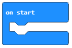 prevlačimo blok 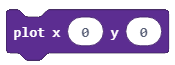 iz kategorije .
Konačan izgled koda:
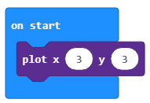Da bismo testirali program pokrećemo ga u simulatoru klikom na dugme  .
.
- Led dioda na simulatoru A.
- Odgovor je tačan!
- Led dioda na simulatoru B.
- Nije tačan odgovor!
- Led dioda na simulatoru C.
- Nije tačan odgovor!
Q-11: Pažljivo pogledaj izgled bloka.
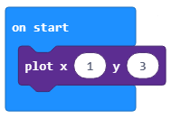Nakon pokretanja programa koja dioda će biti upaljena na ekranu?
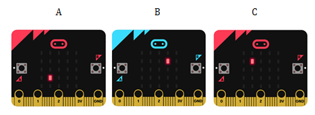Ako želimo da isključimo led diodu koristimo blok , u kome definišemo položaj (koordinate) diode koju želimo da isključimo. Drugim rečima, definišemo x, i y koordinatu led diode.
Zadatak. Neka su na startu uključene sve led diode. Kada korisnik pritisne taster A isključuju se led diode koje se nalaze u uglovima ekrana.
Uporedi svoje rešenje sa našim: https://makecode.microbit.org/_4e6RXM5FmA8M
Zadatak. Kreiraj program kojim ćeš simulirati rad semafora, tako što ćeš naizmenično paliti i gasiti led diode koje se nalaze u trećoj vrsti i prdrugoj, trećoj i četvrtoj koloni.
Mala pomoć: Kako se kod semafora paljenje i gašenje svetala dešava u određenom vremnskom periodu (neka bude 1 sekunda), za definisanje tog intervala koristi blok 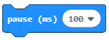.
Uporedi svoje rešenje sa našim: https://makecode.microbit.org/_TRPRj98xj2Ap
Blok je blok koji se koristi za uključivanje led diode ako je isključena, odnosno isključuje led diodu ako je uključena. Naravno i u ovom bloku je potrebno postaviti vrednosti za koordinate x i y.
- Lampica koja će se ugasiti nakon 1 milisekunde.
- Nije tačan odgovor!
- Lampica koja se pali i gasi na svakih 1 milisekundu.
- Odgovor je tačan!
- Lampica koja će se upaliti nakon 1 milisekunde.
- Nije tačan odgovor!
Q-12: Pažljivo pogledaj izgled bloka.
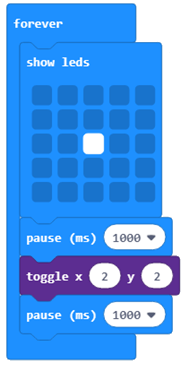Izvršavanjem gornjih blokova šta će biti prikazano?
Dodatak: Za analizu podataka sa ulaza (grafički), u našem slučaju, nivoa osvetljenja možemo da koristimo blok 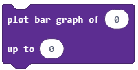 u koji unosimo početnu i krajnju vrednost intervala koji se analizira.
U našem slučaju početna vrednost će biti blok  (koji čuva vrednost očitavanja senzora svetlosti), a krajnja vrednost će biti 255, jer se količina izmerene svetlosti dobija u rasponu od 0 do 255.
(koji čuva vrednost očitavanja senzora svetlosti), a krajnja vrednost će biti 255, jer se količina izmerene svetlosti dobija u rasponu od 0 do 255.
Blok prevlačimo u blok  iz kategorije
iz kategorije  .
.
Izgled bloka:
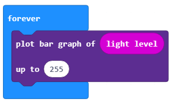Da bismo testirali program pokrećemo ga u simulatoru klikom na dugme .
U ovom slučaju pokreće se simulator za grafički prikaz podataka.
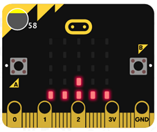 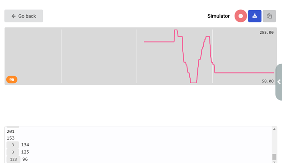Ovaj simulator radi sve dok ga ne zaustavimo klikom na dugme  . Ako želimo da preuzmemo prikupljene podatke sa ulaza, možemo ih preuzeti u formatu .csv na svoj računar klikom na dugme . Ovaj dokument sadrži kolone sa vremenom (u milisekundama) i izmerenim nivoom osvetljenja.
. Ako želimo da preuzmemo prikupljene podatke sa ulaza, možemo ih preuzeti u formatu .csv na svoj računar klikom na dugme . Ovaj dokument sadrži kolone sa vremenom (u milisekundama) i izmerenim nivoom osvetljenja.